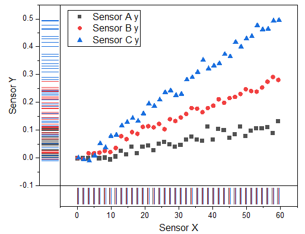

Punktdiagramm mit Rugs
Scatter-Rug-Graph
- 
Datenanforderungen
Wählen Sie eine oder mehrere Y-Spalten oder einen Datenbereich aus mindestens einer Y-Spalte aus. Wenn es eine verbundene X-Spalte gibt, stellt die X-Spalte die X-Werte bereit; ansonsten wird ein Abtastintervall der Y-Spalte oder Zeilennummer verwendet.
Diagramm erstellen
Wählen Sie die gewünschten Daten aus.
Wählen Sie im Menü .
Vorlage
ScatterRug.OTP (installiert im Origin-Programmordner).
Hinweise
- Die Grundidee der Rugs besteht darin, die Datenpunkte auf die Achsen zu projizieren und sie als dünne Linien neben den Achsen darzustellen.
- Diese Darstellung der Rugs ist kein Dichtediagramm. Sie projiziert nur jeden Punkt mit einer dünnen Linie auf die Achsen. Daher gibt es keine Bandbreite in der Darstellung der Rugs.
- Wenn die XY-Richtung duplizierte Werte hat, überschneiden sich die Ruglinien.
- Sie können doppelt auf das Rugfeld klicken, um die Registerkarte Rug im Dialog Achsen zu öffnen und die detaillierten Einstellungen für diese Art von Diagrammen zu prüfen.